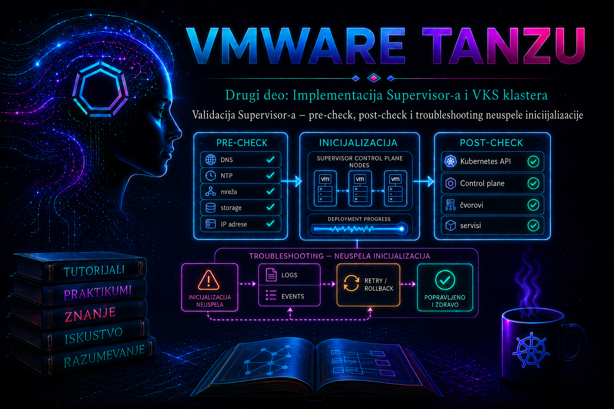

VMware & Tanzu

Omogućavanje Supervisor-a nije završeno kada se čarobnjak zatvori bez neposredne greške niti kada se u vSphere Client-u pojavi oznaka Running. Implementacija je završena tek kada su preduslovi dokazano ispunjeni, kontrolne ravni stabilne, Kubernetes API i zavisni servisi dostupni, mrežni i storage tokovi provereni, a administrator poseduje skup dokaza na osnovu kojih može da razlikuje prolazno usaglašavanje od trajnog kvara. Ova lekcija zato pretvara plan iz lekcije 13, postupak iz lekcije 14 i model zdravlja iz lekcije 15 u ponovljiv proces prihvatanja platforme.
Termin pre-check ovde ima dva nivoa. Prvi je provera koju proizvod izvršava pre aktivacije i koja otkriva deo nepodržanih ili nedostupnih preduslova. Drugi je šira administratorska validacija: DNS, NTP, IP opsezi, rutiranje, MTU, firewall, sertifikati, storage policy, resursi, licence i operativno vlasništvo. Ugrađeni pre-check je važna zaštitna ograda, ali nije zamena za dizajn i testiranje. Post-check je skup funkcionalnih proba posle aktivacije. Troubleshooting nije nasumično ponavljanje čarobnjaka, već kontrolisan tok: prikupi dokaze, odredi obim, postavi hipotezu, potvrdi uzrok, primeni najmanje invazivnu korekciju, ponovo validiraj i dokumentuj rezultat.
Ciljevi lekcije i kriterijum uspeha
Po završetku lekcije administrator treba da ume da:
- izvede i protumači pre-check pre promene stanja klastera;
- napravi baznu liniju i sačuva dokaze o konfiguraciji i zavisnostima;
- razlikuje status implementacije, zdravlje control plane VM-ova i funkcionalnu spremnost Kubernetes platforme;
- validira upravljačku mrežu, workload mrežu, DNS, NTP, storage i Kubernetes API;
- korelira vCenter zadatke i događaje sa alarmima, stanjem VM-ova, servisima i logovima;
- izabere između čekanja, bezbednog retry-ja, korektivne promene i kontrolisanog uklanjanja neuspele implementacije;
- izradi tehnički zapis incidenta koji omogućava ponovljiv oporavak i kvalitetnu eskalaciju podršci.
Verzije, nazivi proizvoda i granice postupka
Nazivi ekrana i pojedini statusi razlikuju se između vSphere 7, vSphere 8 i novijih izdanja VMware Cloud Foundation-a. Raniji materijali koriste nazive vSphere with Tanzu, Workload Management i Supervisor Cluster; aktuelna dokumentacija češće koristi vSphere Supervisor, Supervisor i vSphere Kubernetes Service (VKS). U starijim izdanjima za Tanzu Kubernetes Grid Service sreće se skraćenica TKG Service. Administrator mora za tačan build proveriti Release Notes, Product Interoperability Matrix, Configuration Maximums i odgovarajući vodič za izabrani mrežni model.
Ova lekcija ne pretpostavlja da je jedan postupak univerzalan za Supervisor sa vSphere Distributed Switch mrežom, NSX mrežom ili funkcijama dostupnim u VCF 9.x. Pre-check i dokazni tok su zajednički, ali portovi, load balancer, objekti mreže, način dodele IP adresa, licence i dostupne mogućnosti nisu isti. Ne kopirati komande za menjanje stanja iz druge verzije i ne koristiti procedure za NSX nad vDS implementacijom, ili obrnuto. Pre svake korekcije zabeležiti vCenter, ESXi, NSX i Supervisor verziju, build i mrežni model.
Validacija kao niz kontrolnih kapija
| Kapija | Ključno pitanje | Minimalni dokaz | Odluka |
|---|---|---|---|
| G0 – promena odobrena | Da li su obim, vlasnici, maintenance window i rollback dogovoreni? | Change zapis, topologija, rezervisani resursi i kontakti | Go / no-go pre pre-check-a |
| G1 – preduslovi | Da li proizvod i administrator potvrđuju kompatibilnost i zavisnosti? | Pre-check bez blokirajućih grešaka i popunjena matrica preduslova | Aktiviraj ili koriguj dizajn |
| G2 – implementacija | Da li su control plane VM-ovi kreirani i stabilni? | Uspešni vCenter zadaci, bez kritičnih alarma, očekivan broj VM-ova | Nastavi post-check ili dijagnostikuj |
| G3 – platforma | Da li API, sistemski čvorovi i servisi rade kao celina? | readyz, stanje čvorova, sistemski podovi i događaji |
Prihvati tehničku spremnost ili otvori incident |
| G4 – operativna spremnost | Da li monitoring, logovi, pristup i runbook omogućavaju održavanje? | Alarmi, centralni logovi, test pristupa i potpisan acceptance zapis | Predaja u rad ili uslovno prihvatanje |
Pre-check: provera pre aktivacije
Pre-check pokrenuti iz vSphere Client-a neposredno pre aktivacije i ponoviti ga posle svake izmene relevantnog preduslova. Tačna putanja zavisi od verzije, ali se nalazi u prikazu za Workload Management odnosno Supervisor Management, pri izboru ciljnog klastera i pokretanju konfiguracije. Rezultat sačuvati kao snimak ekrana ili izvoz zadataka i događaja. Upozorenje ne treba automatski prihvatiti: za svako upozorenje navesti vlasnika rizika, obrazloženje i uslov pod kojim je prihvatljivo.
| Oblast | Šta proveriti | Tipičan dokaz | Posledica propusta |
|---|---|---|---|
| Kompatibilnost i licenca | Podržani build-ovi vCenter-a, ESXi-ja i NSX-a, edition/licenca i ograničenja izdanja | Inventar verzija i rezultat matrice interoperabilnosti | Funkcija nije ponuđena, aktivacija se zaustavlja ili nastaje nepodržano stanje |
| Klaster i resursi | DRS/HA zahtevi za izdanje, zdravi hostovi, kompatibilan CPU, slobodni CPU, RAM i datastore kapacitet | Cluster summary, capacity izveštaj i aktivni alarmi | Control plane VM ne može da se kreira, uključi ili premesti |
| Storage | Storage policy postoji, kompatibilna je i ima dovoljan kapacitet; datastore-i su dostupni svim potrebnim hostovima | Policy compliance i datastore accessibility | Neuspešan clone, attach ili kasnija degradacija |
| DNS i NTP | Forward i reverse rezolucija gde je zahtevana, isti vremenski izvori i prihvatljiv clock skew | dig/nslookup, stanje NTP-a i vremenske oznake |
TLS, autentikacija i registracija servisa otkazuju naizgled nepovezano |
| IP plan i mreža | Nezavisni, nepreklopljeni opsezi; gateway, ruta, VLAN, MTU i slobodne adrese; API/VIP dostupnost | IPAM izvod, test ruta i firewall matrica | VM postoji, ali API ili interni servisi nisu dostupni |
| Bezbednost | Potrebni portovi i smerovi, validni sertifikati, privilegije naloga i pouzdan lanac CA | Firewall potvrda, RBAC zapis i TLS proba | Timeout, zabrana pristupa ili TLS greška tokom bootstrap-a |
| Operativna spremnost | Monitoring, centralni logovi, backup zavisnih sistema, eskalacija i change freeze | Runbook i vlasnici servisa | Kvar se kasno otkriva, a dokazi nestaju ili nisu korelisani |
Sa administratorske radne stanice proveriti rezoluciju i TLS putanju prema planiranom ili dodeljenom API FQDN-u. Sledeće komande su read-only. dig proverava odgovor DNS-a, nc samo TCP dostupnost porta, a openssl prikazuje sertifikat koji endpoint zaista isporučuje. Uspešan TCP handshake nije dokaz da je Kubernetes API zdrav; on samo sužava problem.
dig +short supervisor-api.lab.example
dig -x 192.0.2.40 +short
nc -vz supervisor-api.lab.example 6443
openssl s_client -connect supervisor-api.lab.example:6443 \
-servername supervisor-api.lab.example -showcerts < /dev/null
Očekuje se konzistentna adresa, uspešna TCP veza i sertifikat čiji period važenja, SAN imena i issuer odgovaraju dizajnu. -k u narednim curl probama sme služiti samo za dijagnostiku: zaobilaženje provere poverenja nije trajna korekcija. Ako klijent ne veruje CA lancu, ispraviti trust store ili sertifikat, a ne navikavati operatere na ignorisanje TLS greške.
Šta sačuvati pre klika na Enable
- vCenter, ESXi i NSX build-ove, tip mreže i izabrane licence;
- ime klastera, hostove, resource pool, storage policy i datastore kandidata;
- management, workload, ingress/egress i service CIDR/opsege prema konkretnom modelu;
- DNS zapise, NTP izvore, gateway, VLAN/segment, MTU i firewall pravila;
- rezultat pre-check-a, otvorene alarme i baznu liniju resursa;
- tačno vreme početka, operatora, change broj i poslednju promenu infrastrukture.
Ova evidencija nije birokratija. Vremenska oznaka omogućava filtriranje logova; popis poslednjih promena često odmah otkriva uzrok; bazna linija sprečava da se postojeći alarm pogrešno pripiše Supervisor-u. Lozinke, privatne ključeve, kubeconfig tokene i kompletne sertifikate ne stavljati u tiket ili zajedničku belešku.
Post-check: od statusa do funkcionalnog dokaza
Post-check se izvodi slojevito. Najpre posmatrati vCenter zadatke i događaje, zatim control plane VM-ove i njihove alarme, potom endpoint i Kubernetes API, a tek onda sistemske resurse i operativne integracije. Time se izbegava zaključak da je „Kubernetes pokvaren” kada je stvarni uzrok nedostupan datastore, neispravna ruta ili iscrpljen IP pool.
- vCenter sloj: Supervisor status je stabilan, nema neuspelih ili zaglavljenih zadataka, a alarmi su objašnjeni.
- VM sloj: očekivani control plane VM-ovi postoje, uključeni su, nemaju boot loop i raspoređeni su u skladu sa pravilima dostupnosti.
- Mrežni sloj: API FQDN/VIP se pravilno razrešava, TCP/TLS veza radi sa odobrenih mreža, a gateway, MTU i rute odgovaraju dizajnu.
- Kubernetes sloj: API odgovara,
/readyzje uspešan, čvorovi i kritični sistemski podovi su spremni, a događaji ne pokazuju ponavljajuće greške. - Storage sloj: policy je usaglašena, datastore-i dostupni, nema attach/mount grešaka i planirani kapacitet ostaje raspoloživ.
- Operativni sloj: privilegovani i ograničeni pristup rade prema RBAC modelu, logovi i alarmi stižu u nadzor, a dokumentacija je ažurirana.
Sledeće Kubernetes komande izvršava administrator sa radne stanice na kojoj je instaliran kompatibilan VMware distribuirani kubectl paket i gde je aktivan Supervisor kontekst dobijen podržanim postupkom prijave za konkretnu verziju. Sve komande su read-only, ali izlaz može sadržati interne adrese, imena i osetljive metapodatke, pa ga zaštititi kao operativni dokaz.
kubectl config current-context
kubectl cluster-info
kubectl get --raw='/readyz?verbose'
kubectl get nodes -o wide
kubectl get pods -A -o wide
kubectl get events -A --sort-by='.metadata.creationTimestamp'
Uspešan readyz znači da su prijavljene interne provere API servera spremne; to nije dokaz da su svi dodatni servisi, mrežni tokovi ili budući VKS workload-i funkcionalni. Kod podova posmatrati READY, STATUS, broj restartovanja i starost. Jednokratni restart tokom inicijalizacije nije isto što i rastući brojač restartovanja. Događaji imaju ograničeno zadržavanje: prikupiti ih rano i korelisati sa UTC vremenskim intervalom incidenta.
Ako RBAC ne dozvoljava pregled svih namespace-ova, to samo po sebi nije kvar. Zabeležiti identitet i očekivanu ulogu, pa proveriti autorizaciju ciljanim upitom. Komanda je read-only i vraća yes ili no:
kubectl auth can-i get nodes
kubectl auth can-i list pods --all-namespaces
kubectl auth can-i --listDokazi, logovi i korelacija vremena
| Izvor | Šta tražimo | Kako tumačimo |
|---|---|---|
| vSphere Client Tasks & Events | Prvi neuspešan zadatak, objekat, korisnik, vreme i lanac zavisnih zadataka | Prva greška je obično vrednija od kasnijih kaskadnih poruka |
| Alarmi klastera, hosta, VM-a i datastore-a | Resursni pritisak, HA/DRS, mreža, storage i dostupnost hosta | Utvrđuje da li je kvar lokalizovan ili infrastrukturni |
| vCenter servisni logovi | Poruke servisa koji orkestrira Workload Management/Supervisor, autentikaciju i zadatke | Koristiti zvaničnu lokaciju i bundle za tačan build; ne pretpostavljati isto ime fajla kroz sve verzije |
ESXi hostd, vpxa, VM i mrežni logovi |
Power-on, placement, datastore, port group, vNIC i komunikacija sa vCenter-om | Relevantno kada VM nije kreiran, pokrenut ili povezan |
| NSX Manager/Edge logovi i alarmi | Segment, T1/T0, load balancer, SNAT, routing i realizacija objekata | Primena samo kod NSX mrežnog modela; proveriti i data plane, ne samo objekat u UI-ju |
| Supervisor control plane i Kubernetes događaji | Bootstrap, sertifikati, API, etcd, CNI, CSI, DNS i ponavljajući reconciliation | Prikupljati podržanim UI/bundle ili forwarding postupkom; ne menjati appliance ručno |
Za vCenter Support Bundle koristiti podržani vSphere Client postupak ili vc-support prema zvaničnoj proceduri za konkretan build. Bundle može sadržati inventar, IP adrese, korisnička imena, sertifikate i druge poverljive podatke. Čuvati ga u kontrolisanom repozitorijumu, ograničiti pristup i rok zadržavanja, a podršci slati samo odobrenim kanalom. Direktno menjanje datoteka, systemd jedinica ili Kubernetes statičkih manifesta na upravljanim control plane appliance-ima nije podržan prvi korak i može uništiti dokaze ili pogoršati stanje.
Sistematičan troubleshooting neuspele inicijalizacije
Svaki incident razložiti na šest odvojenih polja:
- simptom: tačna poruka ili merljivo ponašanje, bez pretpostavljenog uzroka;
- obim i posledica: jedan VM, host, klaster, API ili čitava platforma; šta korisnik ne može da uradi;
- neposredni uzrok: komponenta koja je trenutno blokirala korak, na primer TLS odbijanje ili nedostupan datastore;
- osnovni uzrok: zašto je neposredni uzrok nastao, na primer pogrešan SAN, zatvoren smer firewall-a ili neusklađen IPAM proces;
- workaround: privremena, odobrena mera koja vraća deo usluge bez prikrivanja rizika;
- trajna korekcija: promena dizajna, konfiguracije ili procesa koja sprečava ponavljanje.
- Zamrznuti dodatne promene i zapisati početak incidenta, verzije, operatora i poslednju poznatu dobru tačku.
- Sačuvati tačnu grešku, task ID ako je prikazan, događaje, alarme i trenutno stanje; ne kliknuti odmah Retry.
- Odrediti najniži neuspešan sloj: kompatibilnost/resursi, vCenter orkestracija, VM, storage, mreža, TLS/identitet ili Kubernetes servis.
- Postaviti jednu proverljivu hipotezu i izvršiti read-only proveru najmanjeg obima.
- Ispraviti osnovni uzrok kroz podržani interfejs. Menjati jednu relevantnu stvar odjednom i zabeležiti je.
- Ponoviti samo podržani korak ili retry kada dokumentacija/status to dozvoljava; pratiti nove događaje u realnom vremenu.
- Izvesti ceo post-check, ne samo proveru da je poruka nestala.
- Dokumentovati uzrok, korekciju, preostali rizik i preventivnu meru; po potrebi otvoriti podršku sa bundle-om i preciznom vremenskom linijom.
Matrica simptoma i dijagnostičkih grana
| Simptom | Prve read-only provere | Česti uzroci | Bezbedna korekcija |
|---|---|---|---|
| Pre-check je blokiran | Pročitati punu poruku, proveriti objekat, verzije, licence, klaster i alarme | Nepodržan build, nedostajuća funkcija, nezdrav host ili neispunjen zahtev klastera | Otkloniti prijavljeni preduslov; ne zaobilaziti proveru nedokumentovanim API pozivom |
| Control plane VM nije kreiran ili se ne uključuje | Tasks & Events, DRS/HA, slobodni resursi, datastore i port group/segment | Nema kapaciteta, policy nije kompatibilna, datastore nije dostupan hostu, placement ili mrežna greška | Vratiti kapacitet/dostupnost i koristiti podržani retry; ne kreirati ili klonirati upravljani VM ručno |
| VM radi, ali API/VIP nije dostupan | DNS, ARP/ruta, firewall smerovi, nc, TLS, load balancer i MTU |
Pogrešan zapis, preklopljen opseg, zatvoren port, nerealizovan LB ili MTU black hole | Ispraviti izvorni DNS/mrežni objekat i potvrditi tok sa obe strane |
| TLS ili prijava ne uspeva | Vreme, SAN/issuer/expiry, CA lanac, identitet i RBAC | Clock skew, pogrešan FQDN, nepotpun trust chain, istek sertifikata ili pogrešna uloga | Sinhronizovati vreme, izdati/isporučiti podržan sertifikat ili ispraviti RBAC; ne trajno koristiti -k |
| Status dugo ostaje Configuring/Degraded | Da li napredak postoji, koji task se ponavlja, stanje VM-ova, događaji i resursni pritisak | Reconciliation čeka zavisnost, IP pool je iscrpljen, DNS/NTP/storage povremeno otkazuju | Ispraviti zavisnost i pratiti podržani reconciliation; eskalirati ako nema napretka u dokumentovanom roku |
| Čvor NotReady ili sistemski pod CrashLoopBackOff/Pending | describe, događaji, CNI/CSI/DNS stanje, resursi i broj restartovanja |
Mrežni plugin, storage attach, image pull, certifikat, pritisak resursa ili nedostupna zavisnost | Korigovati dokazani infrastrukturni uzrok; ne brisati nasumično sistemske podove |
Kada je ciljano potrebno više detalja, sledeće read-only komande prikazuju opis objekta i prethodni log kontejnera koji se restartovao. Ime namespace-a, poda i kontejnera uzeti iz stvarnog izlaza; ne pretpostavljati sistemske nazive između verzija.
kubectl describe node <ime-cvora>
kubectl describe pod -n <namespace> <ime-poda>
kubectl logs -n <namespace> <ime-poda> -c <kontejner> --since=30m
kubectl logs -n <namespace> <ime-poda> -c <kontejner> --previous --since=30m
Log poruka je dokaz simptoma, ne uvek osnovnog uzroka. Na primer, context deadline exceeded može nastati zbog DNS-a, firewall-a, MTU-a, preopterećenja ili nedostupne udaljene usluge. Zato uz poruku uvek zabeležiti izvorni pod/servis, cilj, smer komunikacije, vremenski period i paralelne događaje infrastrukture.
Retry, recovery i rollback
Retry je opravdan kada je uzrok identifikovan i otklonjen, prethodni zadatak više ne menja stanje i proizvod nudi dokumentovanu radnju za nastavak. Ponavljanje bez uzroka može napraviti nove događaje, zamagliti prvi kvar i produžiti incident. Recovery vraća željeno stanje postojeće implementacije podržanim reconciliation ili repair postupkom. Rollback u ovom kontekstu često znači kontrolisano onemogućavanje/uklanjanje neuspele Supervisor konfiguracije i vraćanje rezervisanih zavisnosti, a ne vraćanje snapshot-a vCenter-a ili ručno brisanje control plane VM-ova.
Onemogućavanje Supervisor-a je state-changing i potencijalno destruktivno. U produkciji ga ne pokretati samo zato što aktivacija traje duže od očekivanog. Pre odluke potvrditi da nema namespace-a, workload-a, persistentnih podataka ili drugih zavisnosti koje treba sačuvati; prikupiti support bundle; proveriti zvaničan postupak za tačan build; pribaviti odobrenje i po potrebi uključiti Broadcom podršku. Ručno brisanje upravljanih VM-ova, NSX objekata, vCenter ekstenzija ili zapisa iz interne baze nije rollback.
Praktikum: validacija i kontrolisana dijagnostika
Cilj: izvesti acceptance test sveže omogućenog Supervisor-a, zatim bezbedno analizirati jednu simuliranu grešku klijentskog pristupa bez prekida rada control plane-a. Poslovni kontekst je predaja platforme operativnom timu pre kreiranja prvog Supervisor Namespace-a i VKS klastera.
Topologija: jedan vSphere klaster sa omogućenim Supervisor-om, odgovarajući vDS ili NSX mrežni model, DNS/NTP servisi, storage policy i administratorska Linux radna stanica. Vežba se prilagođava stvarnim imenima i adresama; vrednosti lab.example i 192.0.2.0/24 su dokumentacioni primeri, ne produkcione adrese.
Preduslovi i privilegije: aktivacija iz lekcije 14 je završena ili se nalazi u kontrolisanoj laboratorijskoj fazi; postoji read-only pristup infrastrukturi i ovlašćen Supervisor administratorski kontekst; instalirani su dig, nc, openssl i kompatibilni kubectl
Vežba 1 – acceptance zapis
- Otvoriti change zapis i uneti verzije, mrežni model, vreme početka i rezultat pre-check-a.
- U vSphere Client-u proveriti Supervisor status, control plane VM-ove, Tasks & Events i aktivne alarme. Filtrirati interval od početka implementacije.
- Potvrditi da storage policy ostaje kompatibilna i da datastore ima planiranu rezervu kapaciteta.
- Sa radne stanice izvršiti DNS, TCP i TLS provere iz pre-check odeljka.
- Aktivirati odobreni Supervisor kubeconfig/kontekst i izvršiti
cluster-info,readyz, pregled čvorova, sistemskih podova i događaja. - Zabeležiti svako odstupanje kao pass, pass with risk ili fail; za rizik navesti vlasnika i rok.
Očekivani rezultat: API endpoint se pravilno razrešava, TCP/TLS i autentikovani Kubernetes upiti uspevaju, readyz ne prijavljuje neuspelu kritičnu proveru, čvorovi su spremni, kritični sistemski podovi stabilni, a događaji i alarmi ne pokazuju ponavljajući kvar. Kriterijum završetka nije odsustvo crvene boje u UI-ju, već kompletan dokazni paket bez neobjašnjenog fail nalaza.
Vežba 2 – bezbedna simulacija greške DNS imena
Simulirati pogrešno ime samo u promenljivoj lokalnog shell-a. Ovo ne menja DNS, Supervisor ni mrežu i ne zahteva rollback platforme.
SUPERVISOR_TEST_FQDN='pogresno-ime.lab.example'
dig +short "$SUPERVISOR_TEST_FQDN"
nc -vz "$SUPERVISOR_TEST_FQDN" 6443- Zabeležiti simptom: nema DNS odgovora ili klijent prijavljuje da ime nije poznato.
- Odrediti obim: stvarni API FQDN i postojeći
kubectl - Postaviti hipotezu da je uzrok ime, ne control plane. Uporediti promenljivu sa dokumentovanim FQDN-om i
kubectl config view --minify - Korigovati samo promenljivu na odobreni FQDN i ponoviti
dig,nci TLS proveru. - Potvrditi
readyzautentikovanimkubectl
SUPERVISOR_TEST_FQDN='supervisor-api.lab.example'
dig +short "$SUPERVISOR_TEST_FQDN"
nc -vz "$SUPERVISOR_TEST_FQDN" 6443
kubectl get --raw='/readyz?verbose'
Rollback: ukloniti samo lokalnu promenljivu komandom unset SUPERVISOR_TEST_FQDN. Nema promene stanja platforme. Ako stvarni FQDN ne radi, vežba prestaje da bude simulacija: zamrznuti promene, otvoriti incident i pratiti dijagnostički tok iz lekcije.
Vežba 3 – incident scenario: API timeout posle aktivacije
Scenario se analizira bez namernog izazivanja prekida. Simptom je timeout sa administratorske mreže, dok control plane VM-ovi deluju uključeno. Najpre proveriti da li je problem jednog klijenta ili svih izvora, zatim DNS, TCP/TLS i putanju. Kod NSX modela proveriti realizaciju load balancer-a i rute; kod vDS modela proveriti komponente tačno propisane za izabranu verziju i load balancer integraciju. Ne pretpostavljati isti data plane.
- Sačuvati vreme, punu klijentsku grešku i izvorni IP.
- Uporediti DNS odgovor sa odobrenim IP planom i proveriti da li više odobrenih izvora vidi isti simptom.
- Izvršiti
nciopenssl. Ako TCP ne radi, ostati na mrežnom sloju; ako TLS radi, preći na autentikaciju/API. - U vSphere Client-u korelisati Tasks & Events, alarme i stanje VM-ova u istom vremenskom prozoru.
- Proveriti firewall logove i mrežnu realizaciju sa vlasnikom mreže; tražiti dokaz o smeru i povratnoj ruti.
- Tek po potvrđenom uzroku sprovesti odobrenu korekciju, zatim ponoviti kompletan post-check.
Kriterijum oporavka: endpoint radi sa svih odobrenih administrativnih mreža, sertifikat se pravilno proverava, readyz i Kubernetes upiti uspevaju, nema novog kritičnog alarma, a mrežni i vCenter događaji potvrđuju stabilno stanje. Privremeno otvaranje pristupa sa svih mreža nije prihvatljiv workaround jer povećava bezbednosni rizik i prikriva pogrešnu firewall matricu.
Administratorske prakse
- Pre svake promene sačuvati dokaz, a posle nje ponoviti istu proveru radi uporedivosti.
- Koristiti UTC ili jasno označenu vremensku zonu u incidentima i korelisati clock skew pre poređenja logova.
- Razdvojiti platform owner-a, vSphere, mrežni, storage, DNS/PKI i security tim, ali održavati jednu zajedničku vremensku liniju.
- Ne tretirati upozorenje kao uspeh bez vlasnika rizika i roka; ne tretirati Running kao acceptance bez funkcionalnih proba.
- Ne restartovati servise, ne brisati sistemske podove i ne menjati upravljane appliance VM-ove bez dokazanog uzroka i podržane procedure.
- Redovno slati Supervisor logove u centralni sistem kada izdanje to podržava; lokalni log može nestati tokom zamene control plane VM-a.
- Posle svakog incidenta dopuniti runbook prepoznatljivim simptomom, dokazom uzroka, bezbednom korekcijom i preventivnom kontrolom.
Završna kontrolna tačka
Lekcija je završena kada administrator može dokazivo da:
- objasni razliku između ugrađenog pre-check-a, administratorskog pre-check-a, statusa i funkcionalnog post-check-a;
- formira G0–G4 acceptance zapis sa konkretnim dokazima i kriterijumom go/no-go;
- proveri DNS, TCP, TLS, API readiness, čvorove, sistemske podove, događaje, storage i alarme bez menjanja stanja;
- odredi najniži neuspešan sloj i napiše proverljivu hipotezu umesto da nasumično menja konfiguraciju;
- razdvoji simptom, neposredni i osnovni uzrok, workaround i trajnu korekciju;
- prepozna kada je retry bezbedan, kada je potrebna podrška i zašto ručno brisanje upravljanih objekata nije rollback;
- zaštiti kubeconfig, tokene, support bundle i druge operativne dokaze;
- preda Supervisor narednoj lekciji kao validiranu osnovu za Supervisor Namespace, identitet, kvote i kasnije VKS klastere.
Zaključak
Pouzdan Supervisor ne nastaje jednim uspešnim čarobnjakom, već disciplinovanim zatvaranjem niza zavisnosti. Pre-check sprečava poznate greške pre promene; post-check dokazuje da control plane, API, mreža, storage i bezbednosni tokovi rade zajedno; troubleshooting čuva dokaze i vodi od simptoma do osnovnog uzroka. Najvažnija veština nije poznavanje najvećeg broja komandi, već sposobnost da se svaka komanda veže za hipotezu, očekivani rezultat, rizik i sledeću odluku.
Tek kada je acceptance zapis potpun, incidentne grane proverene i operativno vlasništvo jasno, platforma je spremna da primi Supervisor Namespace-e i VKS klastere. Time administrator preuzima odgovornost ne samo za to da sistem danas pokazuje zelen status, već i za to da se sutrašnja degradacija rano prepozna, bezbedno dijagnostikuje i dokazivo otkloni.